{kind=link}
{kind=link}
{kind=link}
{kind=link}
{kind=link}
{kind=link}
{kind=link}
{kind=link}
{kind=link}
{kind=link}
{kind=link}
{kind=link}
{kind=link}
{kind=link}
{kind=link}
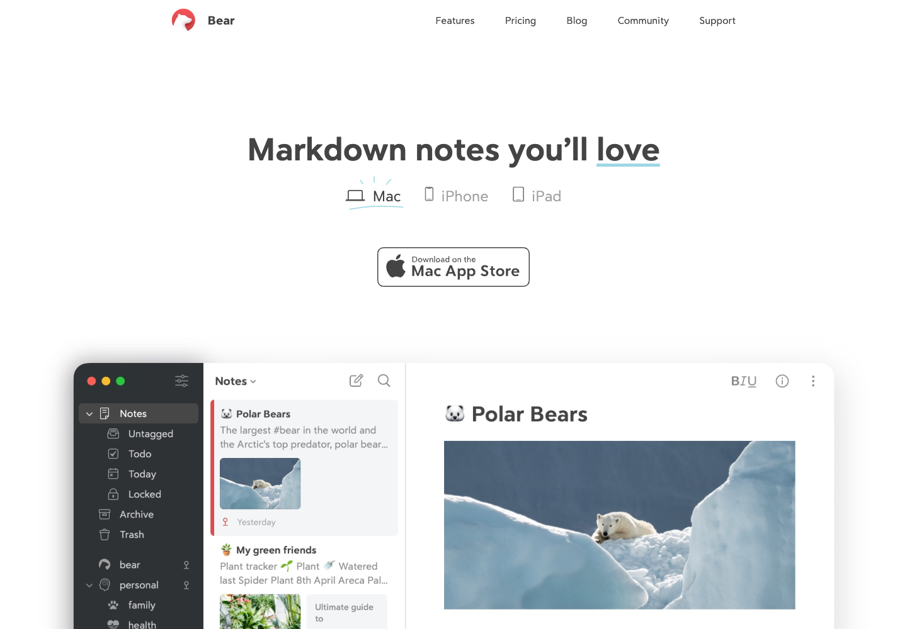
Bear ↗
Separate device choices, a quiet editor edge and clear hierarchy. This is the closest precedent for giving controls their own space around Globoox’s screen.
Primary source · bear.appThe reading room · desktop refinement · 05 September 2026
The September 5 Globoox desktop implementation and the six studies that shaped it, with September 6 language and founder updates marked below. The current language widget remains a baseline while new compositions are explored.
Implemented / actual browser evidence
Hero, walkthrough, quality and closing captures preserve the September 5 1440px evidence. Languages and Team now link to September 6 native 1395px captures. The language view is a retained baseline, not final approval; the old full-page capture is historical for Languages and Team.
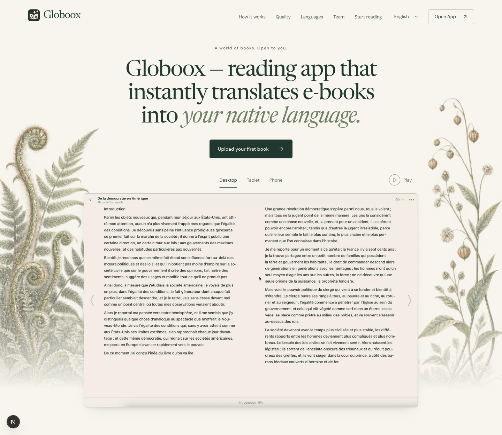
Open full section ↗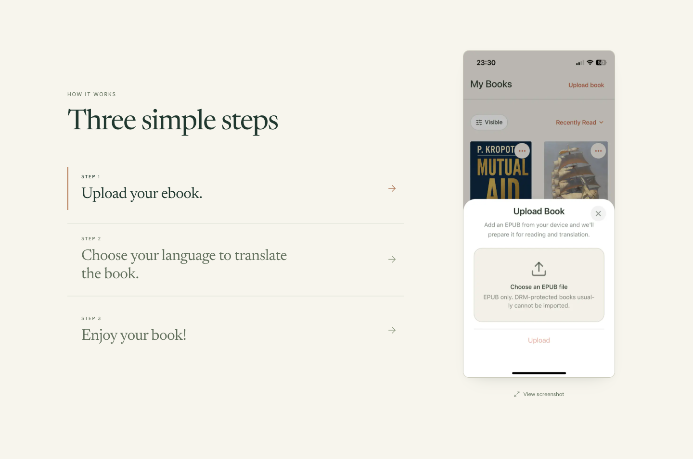
Open full section ↗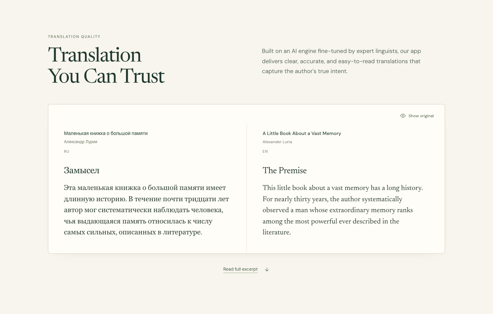
Open full section ↗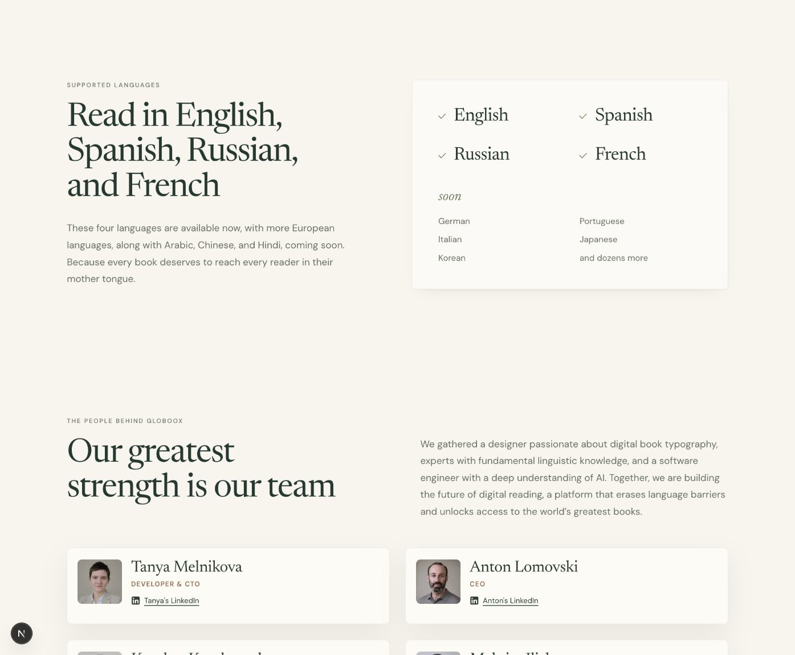
Open full section ↗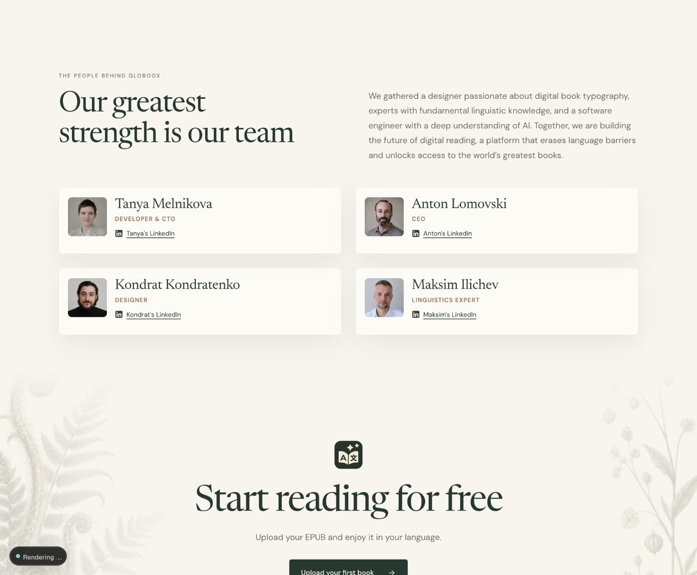
Open full section ↗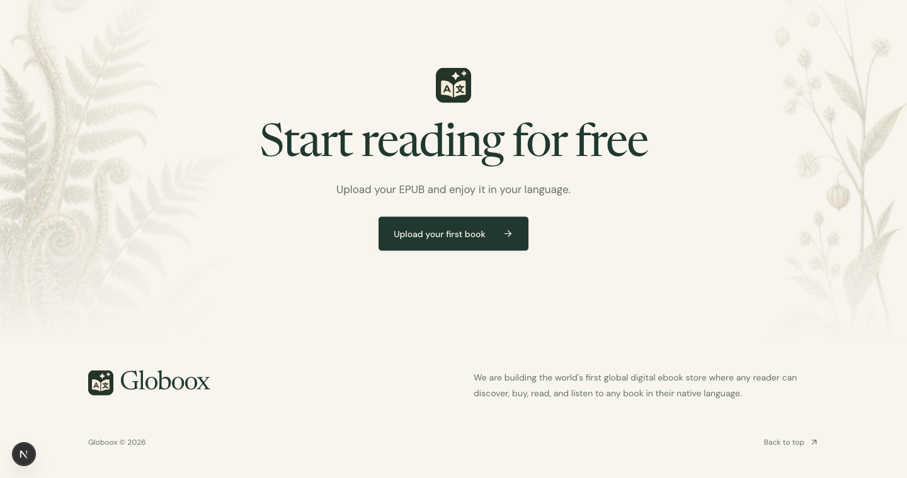
Open full section ↗Selected studies / retained design rationale
The six images below are generated composition references. Each is paired with its implemented result; original assets and source text, rather than generated pixels, govern the actual page.
Hero and Header · light contour · controls above the recording
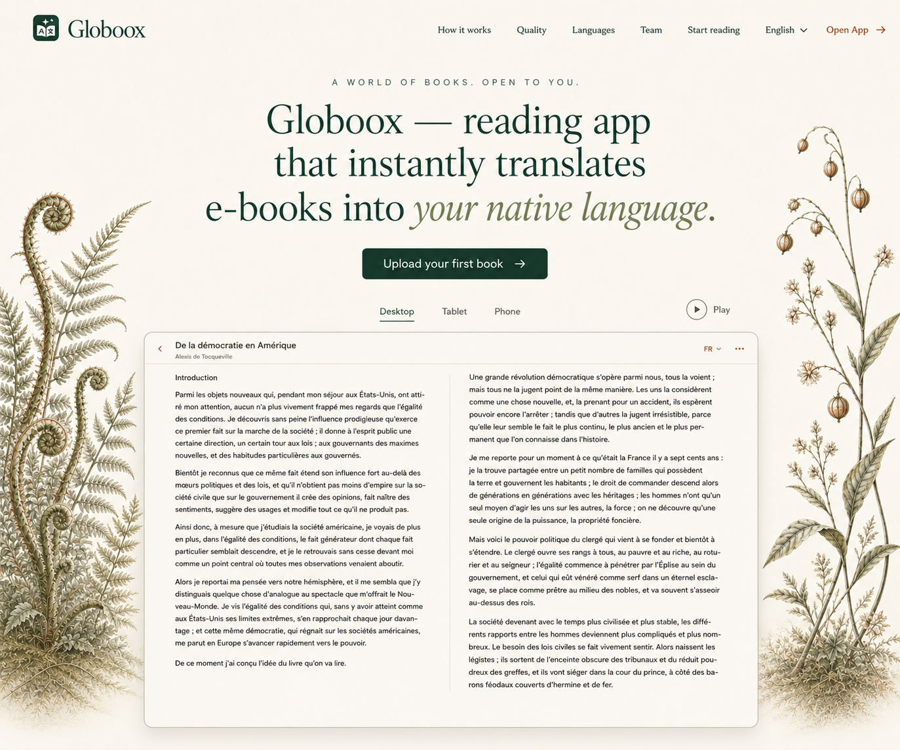
Inspect studyThe decision. Replace the 8px dark bezel with a warm hairline. Center device selection above the screen and give Play/Pause its own space on the same external row. Botanicals direct attention inward.
The generated screen remains a placement reference. The implemented hero uses the unaltered product recording, its native aspect ratio and the original source headline.
Framing and control decisions ↗How it works · one complete screenshot · explicit selection
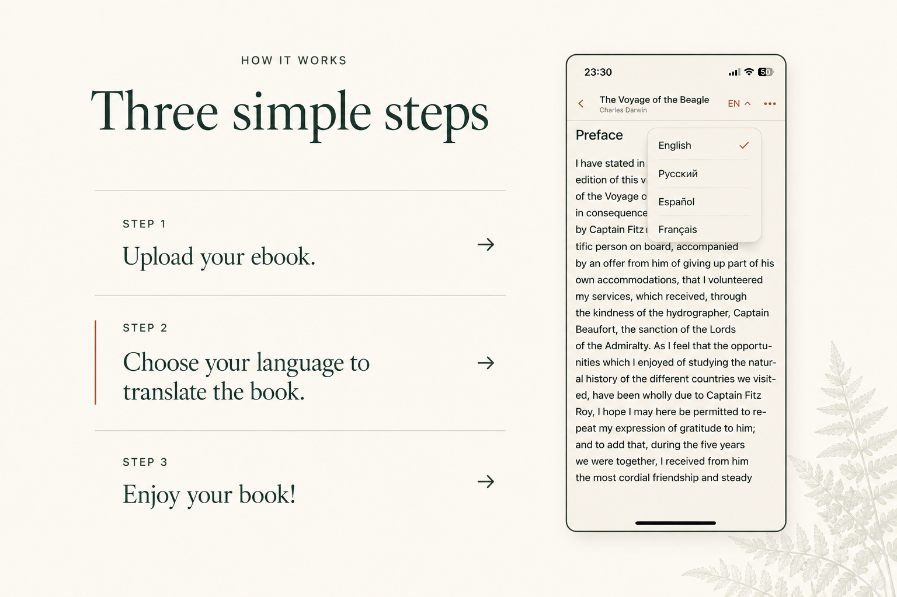
Inspect studyThe decision. Pair all three instructions with one large, complete source screenshot. Each step is directly selectable. Normal scrolling stays normal; the interaction does not rely on hidden scroll state.
The mock illustrates Step 2. The implementation begins at Step 1, uses the original screenshots and brings the generated heading back to the shared page scale.
Critique, interaction and exact prompt ↗Translation quality · facing passages · access to the full source
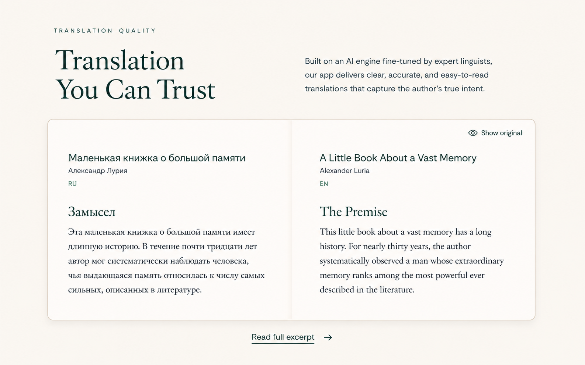
Inspect studyThe decision. Give the paired passages a common reading rhythm. Align their hierarchy and provide a clear route to the full excerpt, so comparison does not depend on two small, unrelated scroll areas.
Preserve the original passage in full and keep Show original meaningful. Generated book text is never the copy source. The implemented excerpt access and reading behavior are verified in QA.md.
Content and interaction boundaries ↗Languages · a static native-name list · all original labels
Historical direction, superseded September 6. The native/English list shown in this mock is no longer live. The simple paper index is retained as a baseline only. Compare the baseline and three unselected new studies ↗
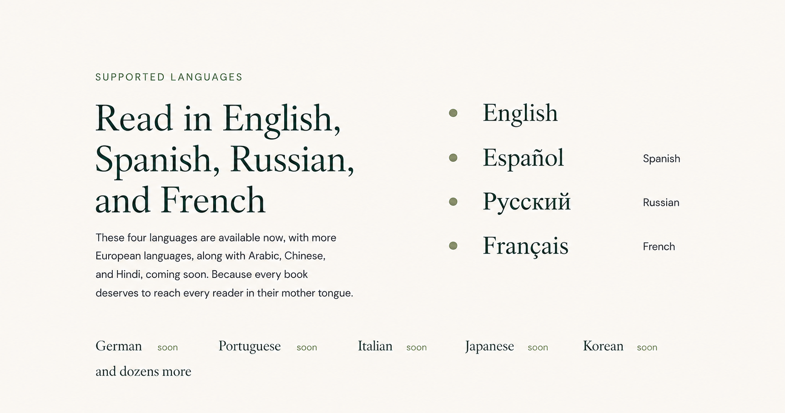
Inspect studyThe September 5 decision, now superseded. Show the four available languages together, with native names and their original English labels. Equal status, readable spacing and restrained sage markers replace the empty switching interaction.
The September 5 implementation kept all six future entries on one row at 1440px. The September 6 baseline now groups availability in one paper index. Both are availability presentations, not translation demonstrations.
Critique and exact generation prompts ↗Team · four identity cards · natural-color portraits
Historical proportions, superseded September 6. The current cards borrow the original landing’s compact 78px-avatar layout. This larger generated-card study is preserved as history. Inspect the restored original layout ↗
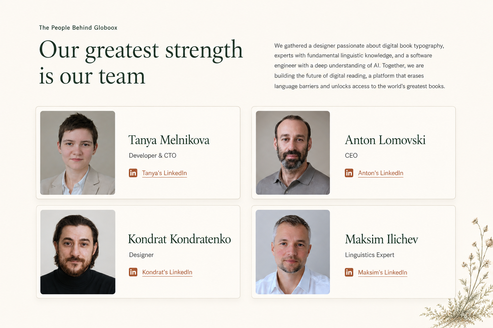
Inspect studyThe September 5 decision. Restore the grouping that makes each person understandable: photograph, name, role and LinkedIn action. Two columns give those details room; natural color brings back the warmth of the original portraits.
The implemented cards use the original four photographs and profile destinations in canonical order. The generated faces remain study pixels only; roles and links were checked at desktop scale.
Critique, content map and provenance ↗Start and Footer · continuous paper · the original action
The decision. Finish on the same paper surface, with a single obvious action and a quiet echo of the hero’s botanical composition. Group the footer identity and full original statement deliberately.
The implementation scales down the generated icon, button and tall stem, and uses the unchanged project icon and source punctuation. The final ending concludes the page without becoming another oversized hero.
Critique, proportions and provenance ↗Reference notes / primary sources
Live primary pages reopened on 05 September 2026. These desktop captures were made earlier that day and visually inspected. Each contributes a specific lesson; the selected composition remains Globoox’s own.

Separate device choices, a quiet editor edge and clear hierarchy. This is the closest precedent for giving controls their own space around Globoox’s screen.
Primary source · bear.app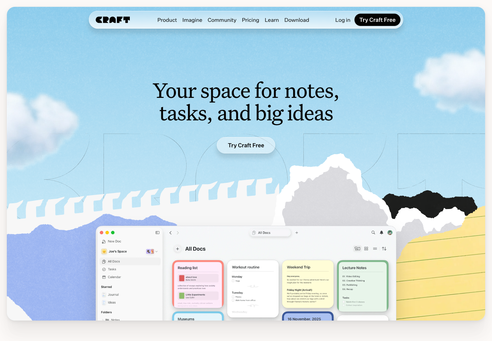
Material character sits behind the app window. Borrow the refined type relationship and decorative framing; give Globoox’s real screen more immediate space.
Primary source · craft.do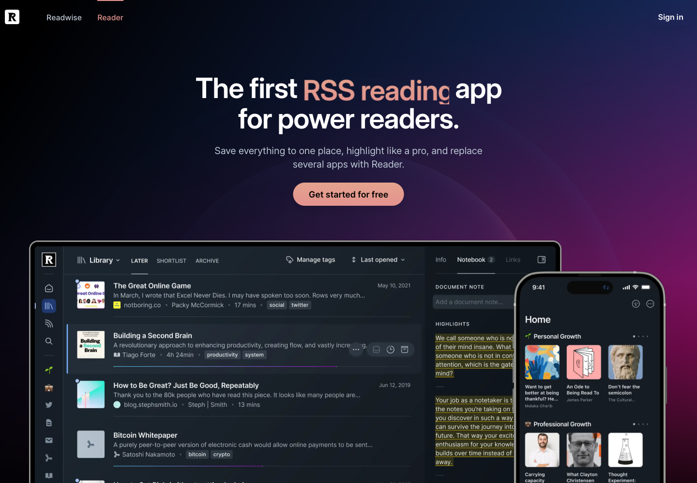
The product is unmistakable at first glance. Borrow that scale and visibility. Its overlapping hardware and dark treatment do not fit this paper-and-pine direction.
Primary source · readwise.io/readThe original Muse reference remains central to the literary composition. See the full earlier moodboard and source research. Playback placement is a Globoox design decision; these captures do not establish a shared playback pattern.
{kind=link}
{kind=link}